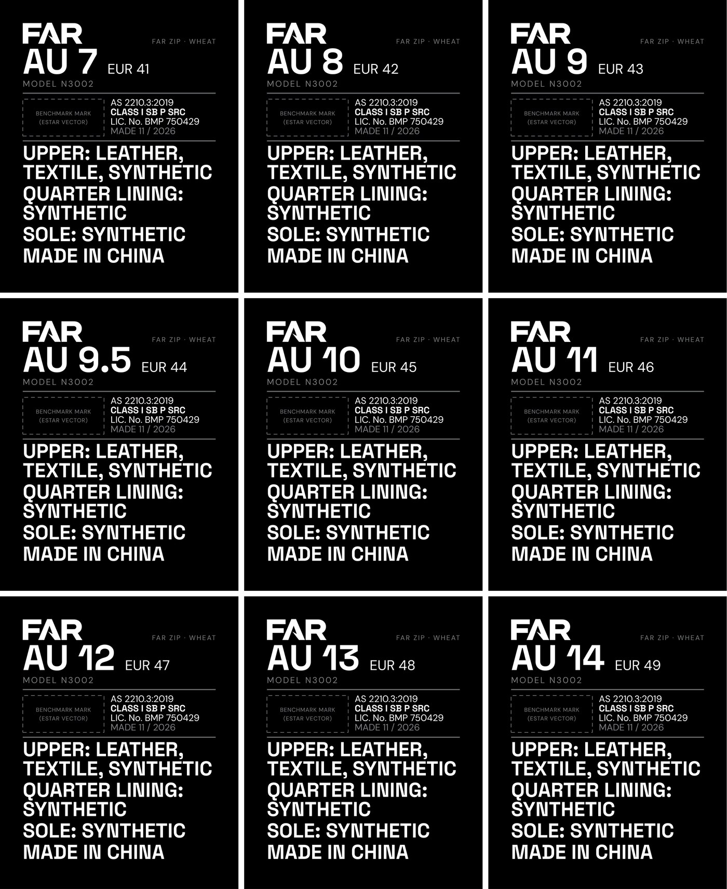
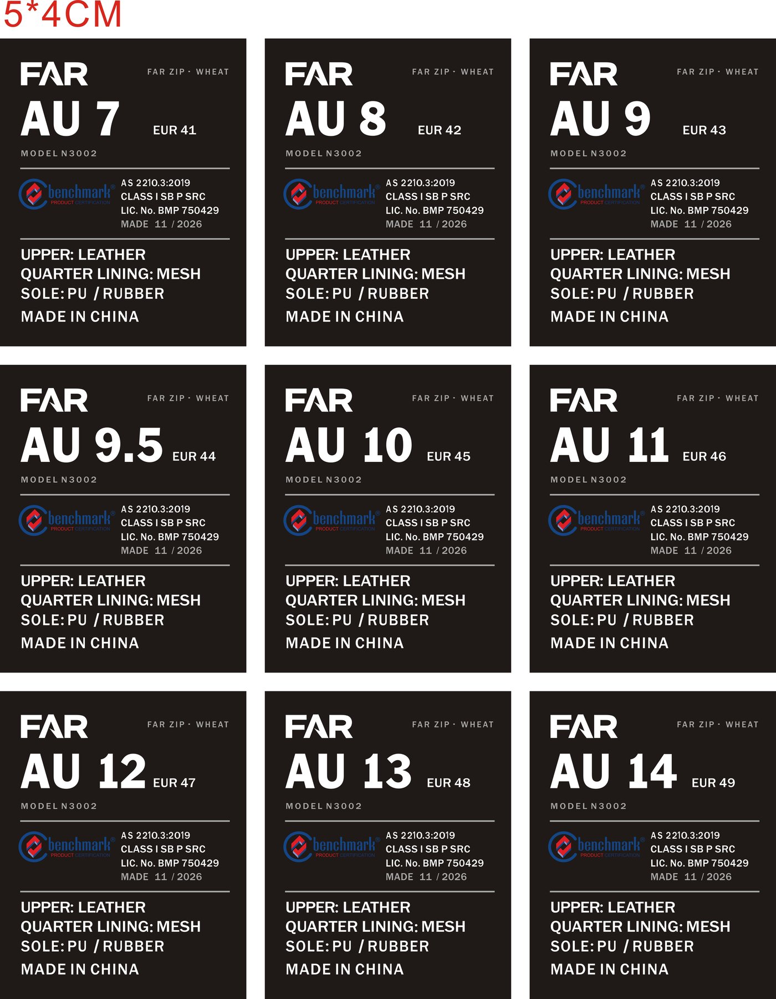

Tongue labels, final
The label sewn inside every boot tongue. All nine sizes, at Estar's real size (4 x 5 cm).
What changed
- Our customs broker checked the wording on 30 Sep. The materials lines have to read like this:
UPPER: LEATHER, TEXTILE, SYNTHETIC
QUARTER LINING: SYNTHETIC
SOLE: SYNTHETIC
MADE IN CHINA
- Those letters must be at least 2.5 mm tall. On Don's mockup they were under 2 mm. On ours they measure 2.7 to 3.3 mm.
- Printed cloth is fine, it doesn't need to be woven.
- Everything else matches Don's mockup: size, model, the standard, the licence number, made 11/2026. Don drops his certification logo in the dotted box.
Ours, final

Don's mockup, 28 Sep

Wrong words (LEATHER, MESH, PU / RUBBER aren't the words customs asks for) and letters under 2 mm.
What happens next
- Don gets the nine files when he's back from holiday (8 Oct).
- He prints one sample and sends a photo next to a ruler. Nothing gets printed in bulk until Fil says OK.
- One open question for Don: is the outsole rubber synthetic? If it's natural rubber, the sole line becomes SOLE: NON-LEATHER.